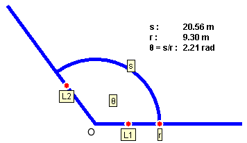

Radian measure. The following diagram illustrates the definition of the radian measure of an angle.

The angle q is the opening between the two rays labeled L1 and L2 leaving from the vertex O. The circular arc s drawn at radius r can be used to measure the radius because, for a given radius, the length of the arc is proportional to q.
The radian measure of the angle q is defined as the ratio
q = s / r .
One needs to divide s by r, because s is proportional to r for a given angle q so that only the ratio s / r is independent of r.
A numerical example is illustrated in the diagram. The radian unit is abbreviated "rad". In dimensional analysis, the "rad" can be treated as a pure number because the radian measure is defined as a ratio of two lengths.
Degree measure. The degree measure of an angle is based on dividing the full circle into 360 equal parts called degrees. The symbol for degree is "o".
Since a full circle of radius r has a circumference (arc) equal to 2pr, the radian measure of a full circle is 2pr / r = 2p rad. Thus, we have the correspondence
360o = 2p rad .
This implies that 1 rad corresponds to 57.3o:
1 rad = 57.3o .